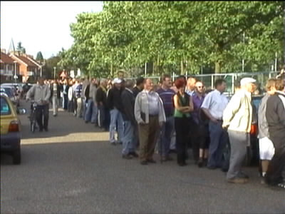
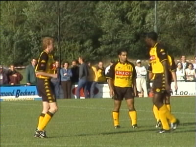
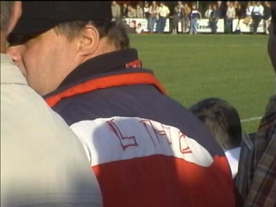
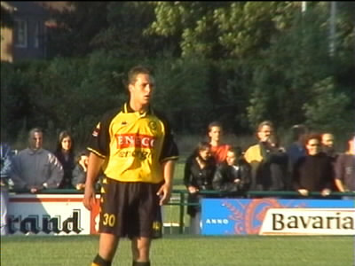
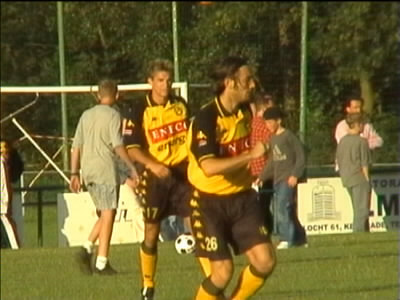

|
LHC - Roda JC 0-13 (11 juli 2001) |

Onverwacht lange wachtrijen om een kaartje te bemachtigen.

Het broertje van Fatih valt in het niet bij Regilio.

Een Laura Hopel Combinatie hool.

Het Belgische supertalent Jerome Colinet.

Vicelich was ook van de partij. Hij was net als Ramora naar
de kapper geweest en wist ook nog een doelpunt te maken.
©KPD